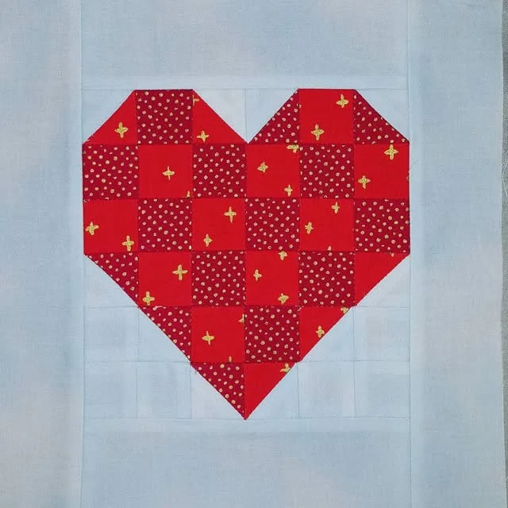
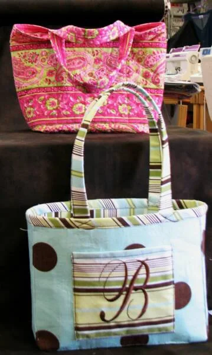
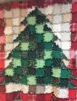
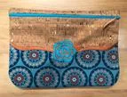
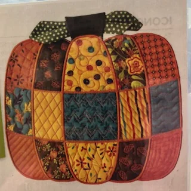

Classes · listed separately for each location
Learn the machine you just bought.
Whether you are sewing clothes, quilts, or crafts, you need to know the features & proper way to use your machine. That’s what Basic Training is for. After that, it’s embroidery, sergers and projects at the table with everybody else.

Basic Training Owner’s Classes
You may take one class or the series, but Pre-Training & Class I are required to attend any of the other classes in a series. There is no class fee for SME Perks owners. Everyone needs to purchase a kit.
Pre-Training
A one-on-one class that includes some basics of your machine: threading, winding the bobbin, etc.
Class I
Review of Pre-Training, threads, needles, cleaning, overview of feet, needle positions, test sew, including zig-zag & decorative stitches.
Class II
Feet, utility stitching & techniques.
Class III
Quilting feet, stitches and techniques.
Basic Training Embroidery
For embroidery machine owners: threads, stabilizers, hoops, plus sewing and saving a design.
Basic Training Serger
3 & 4 thread serger techniques. Later classes move on to ruffles and shirring, blind hems, rolled edges & more.
SME Embroidery Time
Pick your project. You are welcome to take SME Embroidery Time classes any month.
In Goodlettsville
Basic Training machine owners classes are being reconstructed. In the meantime, if you would like individual instructions, call (615) 859-9900 to set an appointment.
Owner: the dates on the current site run through June 2025. Send the next schedule for each store (Knoxville and Goodlettsville) and it drops in here as a simple date list people can read on a phone.
What to bring
The supply list for all classes, straight from the store.
Every class
- Bobbins, pins, machine needles
- Fabric marker, erasable marker
- Scissors, SMALL ruler
- Sewing machine w/accessories in tray
- Needle threader
- Foot control & cord
- Pen & paper or notebook
Basic Training Sewing
- Sewing machine w/accessories in tray (feet that came with your machine)
- 2 bobbins
- Foot control, power cord
- 1 spool regular sewing thread
Basic Training Embroidery
- Sewing machine, including CORD
- Embroidery unit
- Small hoop
- Embroidery foot
- 4 to 8 spools embroidery thread
- Bobbin wound with embroidery bobbin thread
- Erasable fabric marker
Basic Training Serger
- Serger, including CORD with foot control
- Standard foot and basic tray of accessories
- 4 to 5 spools serger thread (2 light & 2 medium)
- Tweezers
- Serger needles
- Erasable marker
If there are additional supplies needed, they are generally listed in an email or on the store’s Facebook page.
Off the class table
A few things people have made in classes at both stores.

Handbags & totes From a past class
From a past class
Rag Tree, quilt as you go
In-the-hoop cork clutch
From a past class
Power Cross Community Service Project
If you would like to help, we would love for you to join us. We try to help with needed items for PC every year. The first year we made pillowcases & arranged for much needed pillows for over 100 children. One year we made table decorations for the CHRISTmas party.
This yearly project: TBA. Power Cross is an inner-city ministry.
Before you sign up
- Reservations are necessary. Call or email the store to put your name on a list for EACH class.
- To be guaranteed a spot, a deposit is required.
- There are participant minimums on most classes.
- Supplies are to be purchased from SME.
- Class fees vary for machines not purchased from Sewing Machines Etc.
- Sewing Machines Etc reserves the right to make class changes as necessary.
*See store for details.